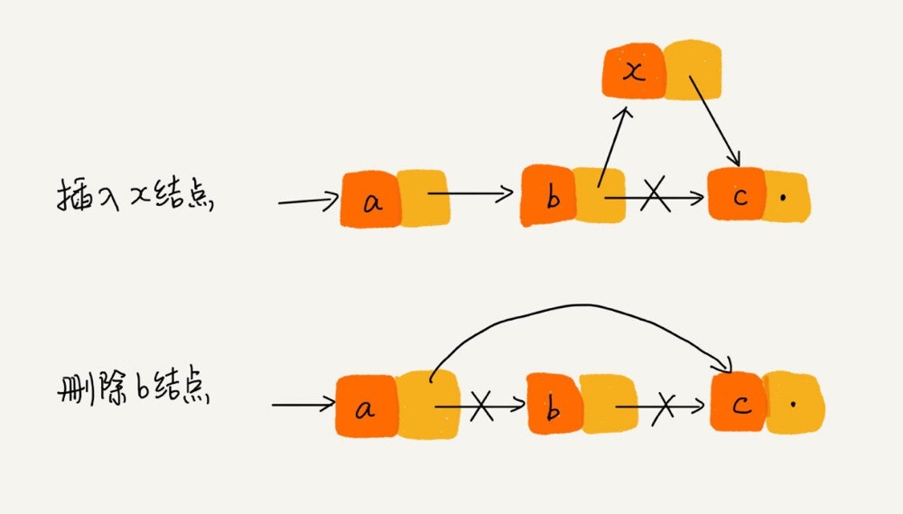
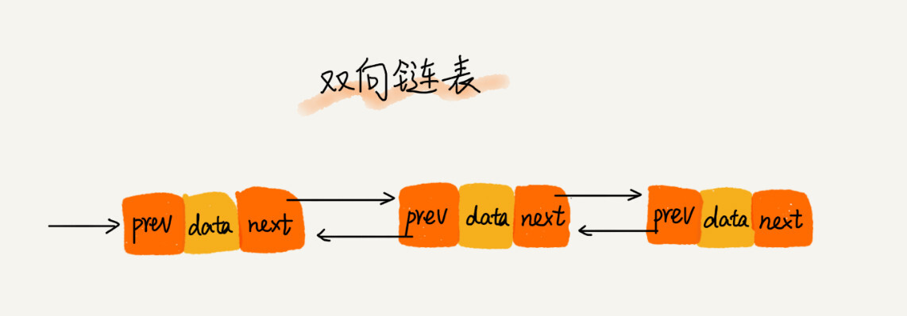
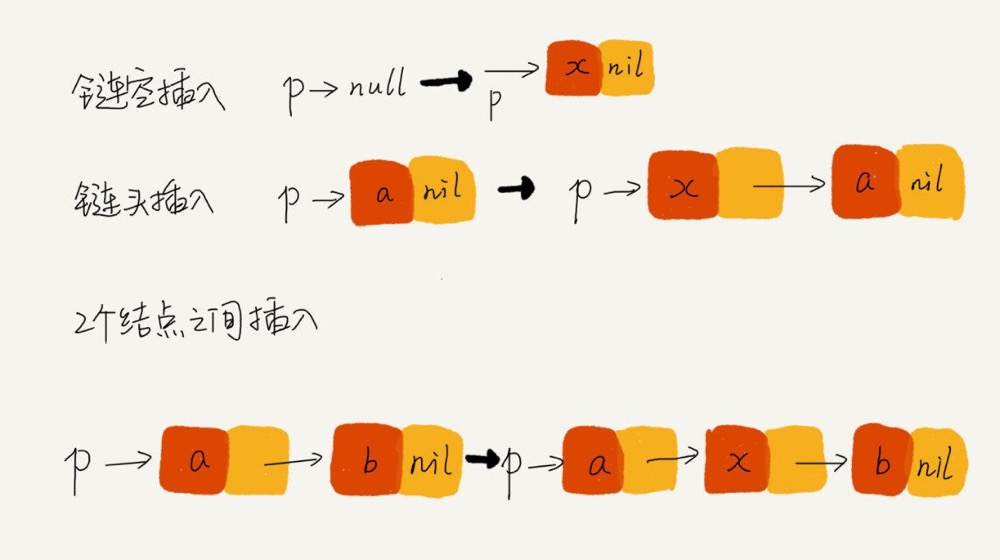

链表学习摘记
- 链表：通过“指针”将一组零散的内存块串联起来使用。
- 链表中每个结点都需要消耗额外的存储空间去存储一份指向下一个结点的指针，所以内存消耗会翻倍。 并且对链表进行频繁的插入、删除操作，会导致频繁的内存申请和释放，容易造成内存碎片。 如果是 Java 语言，就有可能会导致频繁的 GC（Garbage Collection，垃圾回收）。 （假设存储 100 个整数，数组 400 个字节的存储空间足够了。但是如果用链表存储 100个 整数，链表得需要 800 个字节的存储空间）。
- 如果内存容量本身就很小，要存储的数据也比较多。选择数组来存储数据更好，如果内存空间充足，那我们在存储数据的时候到底选择链表还是数组。 就视具体的业务场景而定了。（如果待存储的结构体非常大，则指针开销可以忽略不计）

- 针对链表的插入和删除操作，只需要考虑相邻结点的指针改变，所以对应的时间复杂度是 O(1)。
- 链表随机访问的性能没有数组好，需要 O(n) 的时间复杂度（依次遍历）。
-
- 数组的缺点是大小固定，一经声明就要占用整块连续内存空间。 如果声明的数组过大，系统可能没有足够的连续内存空间分配给它，导致“内存不足（out of memory）”。 如果声明的数组过小，则可能出现不够用的情况，这时只能再申请一个更大的内存空间，把原数组拷贝进去。
- 链表没有大小的限制，天然地支持动态扩容。

- 从结构上来看，双向链表可以支持 O(1) 时间复杂度的情况下找到前驱结点，正是这样的特点，使双向链表在某些情况下的插入、删除等操作都要比单链表简单、高效。
- 用空间换时间（存储的指针信息较之单链表更多）。
- 将某个变量赋值给指针，实际上就是将这个变量的地址赋值给指针，或者反过来说，指针中存储了这个变量的内存地址，指向了这个变量，通过指针就能找到这个变量。
- 所以对链表的操作都是操作 next 指针，因为对当前指针赋值会导致当前指针的 previous 指针无法找到当前节点 （因为父节点存储了子节点的信息，但是更改了子节点的地址会导致父节点无法寻址找到子节点）。
- 插入结点时，一定要注意操作的顺序。
- 删除链表结点时，也一定要记得手动释放内存空间。
- 利用哨兵简化实现难度，在任何时候，不管链表是不是空，head 指针都会一直指向这个哨兵结点。这种有哨兵结点的链表叫带头链表。
- 插入第一个结点和插入其他结点，删除最后一个结点和删除其他结点，都可以统一为相同的代码实现逻辑了。
- 数组哨兵简例：在检查一个数组是否包含指定元素时，常规方法是遍历整个数组，其中涉及判断边界问题，需要做两个判断，1:是否超边界，2:是否找到指定元素。 可以先判断数组尾巴是否时目标元素，如果不是，替换成是（用作哨兵），这样只要无限i++，并且以是否查找到指定元素为终止循环的条件即可 （因为最后的元素就是目标元素，遍历到最后一定会停止）。
- 用来检查链表代码是否正确的边界条件有这样几个：
- 如果链表为空时，代码是否能正常工作？
- 如果链表只包含一个结点时，代码是否能正常工作？
- 如果链表只包含两个结点时，代码是否能正常工作？
- 代码逻辑在处理头结点和尾结点的时候，是否能正常工作？

- 链表注意点：
- 单链表反转
- 链表中环的检测
- 两个有序的链表合并
- 删除链表倒数第 n 个结点；
- 求链表的中间结点